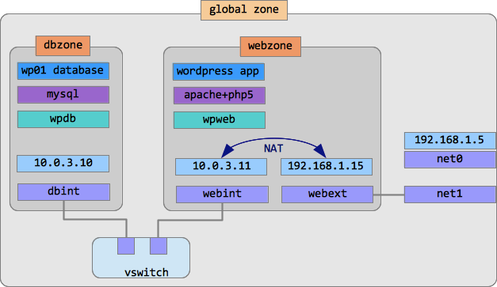
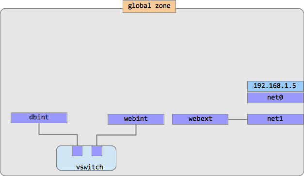
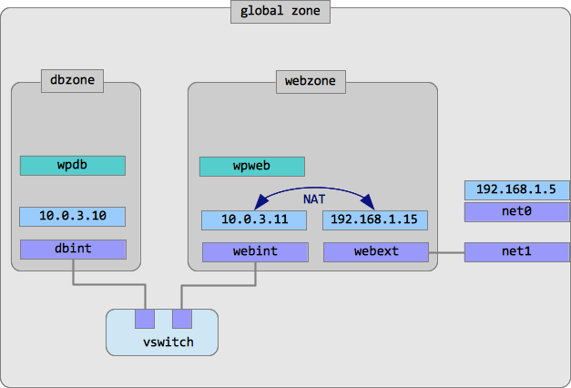
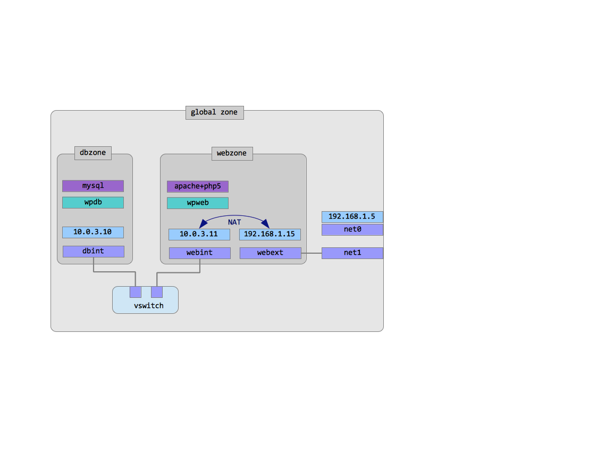

Oracle Solaris 11 Cloud in a Box
Task: You have to configure a secure multi-layered application environment in Oracle Solaris 11.
Lab: In this lab we will install a Wordpress blog application in Oracle Solaris 11 zones. We will create two Solaris zones: one for the database server and another for the web server. We will connect the zones via an internal virtual switch to make sure the database zone is connected to the web zone, but not visible from the outside world. The web zone will have two network interfaces: one for internal connection to the database zone and another for external connection.
Here is the final configuration we are going to build.

Network
Let's start with the network infrastructure. First, we create a virtual Ethernet switch, or etherstub.
root@solaris:~# dladm create-etherstub vswitch0
We will need two virtual network interfaces for our internal network. We will call them dbint and webint as soon as they are going to be used in database zone and web zone respectively and they both are going to be internal, i.e. not visible from outside.
root@solaris:~# dladm create-vnic -l vswitch0 dbint0
root@solaris:~# dladm create-vnic -l vswitch0 webint0
For the network zone we will need another network interface. In our example we will use the second VirtualBox network interface which is called net1 in Solaris. Check if you have two network interfaces configured in your virtual machine:
root@solaris:~# dladm show-phys
LINK MEDIA STATE SPEED DUPLEX DEVICE
net0 Ethernet up 1000 full e1000g0
net1 Ethernet up 1000 full e1000g1
If there is only one network interface you have to power off your virtual machine and add the second network interface using VirtualBox Manager. Configure it as "Bridged Adapter".
Here is how our network configuration should look like:

Zones
Now it's time to create our zones. We are going to have two zones, one for a database server (we are going to use MySQL in this example) and another for a web server (it's going to be Apache).
We'll start with creating a separate ZFS filesystem to store zone root directories. It will be created in our root pool and mounted at /zones.
root@solaris:~# zfs create -o mountpoint=/zones rpool/zones
Zone installation process consists of three steps:
- zone configuraton
- zone profile creation
- zone installation
Our plan is to configure and create a web server zone first and then clone it to create a database zone. This will save time and disk space.
We start with zone configuration. Remember, we are going to configure two interfaces in this zone: one for internal connections (webint0) and another (net1) for the outside connectivity.
root@solaris:~# zonecfg -z webzone
zonecfg:webzone> create
zonecfg:webzone> set zonepath=/zones/webzone
zonecfg:webzone> add net
zonecfg:webzone:net> set physical=webint0
zonecfg:webzone:net> end
zonecfg:webzone> add net
zonecfg:webzone:net> set physical=net1
zonecfg:webzone:net> end
zonecfg:webzone> exit
Now configure a system profile for webzone:
root@solaris:~# sysconfig create-profile -o /root/web-zone-profile.xml
In the dialog screens set the following system's parameters:
Computer Name: webzone
Network connection: Manually
NIC: webint0
IP address: 10.0.3.10
Netmask: 255.255.255.0
Router: 10.0.3.11 (in our case it doesn't matter)
DNS server: 192.168.1.1 (consult your global zone setting by using the following command in another window: svccfg -s dns/client listprop config/nameserver)
Time Zone: select your time zone (hint: when selecting a country, press its first letter, e.g. U for Unites States)
Root password: solaris1
User real name: Zone User
User id: zuser
User password: oracle1
everything else: accept the defaults, just press F2 or ESC-2 to continue.
Remember, we have configured net1 to be used in this zone? Most likely, now net1 is already used by the global zone because it had received its IP address from your local DHCP server. Check it:
root@solaris:~# ipadm show-addr net1
ADDROBJ TYPE STATE ADDR
net1/v4 dhcp ok 192.168.1.114/24
net1/v6 addrconf ok fe80::a00:27ff:fe42:ee04/10
To be able to use the datalink net1 in our webzone we have to disable the IP stack associated with it:
root@solaris:~# ipadm delete-ip net1
root@solaris:~# ipadm show-addr net1
ipadm: cannot get address information: No such interface
At the same time net1 still exists as a datalink:
root@solaris:~# dladm show-link net1
LINK CLASS MTU STATE OVER
net1 phys 1500 up --
And now install the zone:
root@solaris:~# zoneadm -z webzone install -c /root/webzone-profile.xml
It will take about 10 minutes depending on your computer and network connection.
When the installation is completed we have to 1) configure the zone's networking and 2) install the necessary packages. Let's start with the networking part.
root@solaris:~# zoneadm -z webzone boot
...wait a couple of minutes...
root@solaris:~# zlogin -C webzone
[Connected to zone 'webzone' console]
Hostname: webzone
Apr 25 16:19:39 webzone sendmail[3606]: My unqualified host name (webzone) unknown; sleeping for retry
webzone console login: zuser
Password: oracle1 (not displayed)
Last login: Thu Apr 25 11:54:37 on console
Oracle Corporation SunOS 5.11 11.1 September 2012
zuser@webzone:~$
Now we have the datalink net1 available inside the zone, but its IP stack is not configured yet. Let's fix that. In this example we are going to use our local DHCP server, but you may want to change that and assign IP address manually.
zuser@webzone:~$ su -
root@webzone:~# dladm show-phys
root@webzone:~# ipadm create-ip net1
root@webzone:~# ipadm create-addr -T dhcp net1/v4
(alternatively you can assign the IP address manually)
root@webzone:~# ipadm create-addr -a local=192.168.1.114/24 net1/v4
root@webzone:~# ipadm show-addr net1
ADDROBJ TYPE STATE ADDR
net1/v4 dhcp ok 192.168.1.114/24
Make sure that net1 has received its IP address from DHCP server (for example, something like 192.168.1.114 from your home WiFi router).
Check if you can access your local router and the outside network:
root@webzone:~# ping 192.168.1.1 (replace it with your local router's address)
root@webzone:~# ping 8.8.8.8 (this is the Google's DNS server, but you can use any IP address you know is working)
As we have configured the DNS server while create the zone's profile, you should be able to reach Internet sites by name:
root@dbzone:~# ping oracle.com
Time to install packages. We could install separate sets of packages into webzone and dbzone, but for simplicity sake we will install the full set of AMP (Apache, MySQL, PHP) packages into webzone and then clone it into dbzone.
root@webzone:~# pkg install amp
Check:
root@webzone:~# pkg list *apache*
root@webzone:~# pkg list *php*
root@webzone:~# pkg list *mysql*
Make sure all the packages have the letter 'i' in the right column, which means "installed".
Start the web server service and check if it's running OK.
root@webzone:~# svcadm enable apache22
root@webzone:~# svcs apache22
STATE STIME FMRI
online 12:59:06 svc:/network/http:apache22
In your Solaris desktop open the Firefox browser and enter the webzone's external IP address (the one assigned to net1, in my case it's 192.168.1.114) into the address line. The page should read "It works!".
Finally we'll configure a firewall service in this zone because we want to use it for Network Address Translation (NAT) to let the dbzone communicate to the outside world. Change the NAT configuration file /etc/ipf/ipnat.conf:
root@webzone:~# echo "map net1 10.0.3.0/24 -> 0/32" > /etc/ipf/ipnat.conf
Now enable the ipfilter service (which is responsible for NAT):
root@webzone:~# svcadm enable ipfilter
root@webzone:~# svcs *ipf*
STATE STIME FMRI
online 17:41:54 svc:/network/ipfilter:default
You may need to check it several times until you see it online.
Also you have to enable IP forwarding:
root@webzone:~# ipadm set-prop -p forwarding=on ipv4
Now our webzone is fully configured.
At the next step we will create a database server zone. But instead of installing it (and waiting another 10 minutes) we will just clone our existing zone to save time and disk space. So, we repeat two first steps (configuration and profile creation) and then replace the third one with the cloning operation.
root@webzone:~# exit
root@solaris:~# zoneadm -z webzone halt
Now let's configure our second zone. It will be running the database part of our application, so it is called dbzone.
root@solaris:~# zonecfg -z dbzone
zonecfg:dbzone> create
zonecfg:dbzone> set zonepath=/zones/dbzone
zonecfg:dbzone> add net
zonecfg:dbzone:net> set physical=dbint0
zonecfg:dbzone:net> end
zonecfg:dbzone> exit
Next, we have to create the zone's profile where we configure networking, passwords, time zone etc. It's very similar to the one we created for the webzone.
root@solaris:~# sysconfig create-profile -o /root/dbzone-profile.xml
In the dialog screens set the following system's parameters (use F2 or ESC-2 to go from screen to screen):
Computer Name: dbzone
Network connection: Manually
NIC: dbint0
IP address: 10.0.3.11
Netmask: 255.255.255.0
Router: 10.0.3.10 (in our case it doesn't matter)
DNS server: 192.168.1.1 (consult your global zone setting by using the following command in another window: svccfg -s dns/client listprop config/nameserver)
Time Zone: select your time zone (hint: when selecting a country, press its first letter, e.g. U for Unites States)
Root password: solaris1
User real name: Zone User
User id: zuser
User password: oracle1
everything else: accept the defaults, just press F2 or ESC-2 to continue.
Now we can clone the webzone into dbzone:
root@solaris:~# zoneadm -z dbzone clone -c /root/dbzone-profile.xml webzone
How long did it take? It was much faster than initial installation, wasn't it?
Boot both zones and then login into it to check if everything is all right.
root@solaris:~# zoneadm -z dbzone boot
root@solaris:~# zoneadm -z webzone boot
...You may need to wait for a couple of minutes or more... Remember, two zones are booting simultaneously inside your tiny virtual machine.
root@solaris:~# zlogin -C dbzone
[Connected to zone 'dbzone' console]
Hostname: dbzone
Apr 25 16:19:39 dbzone sendmail[3606]: My unqualified host name (dbzone) unknown; sleeping for retry
dbzone console login: zuser
Password: oracle1 (not displayed)
Last login: Thu Apr 25 11:54:37 on console
Oracle Corporation SunOS 5.11 11.1 September 2012
zuser@dbzone:~$ su -
root@dbbzone:~#
Check if networking is OK:
root@dbbzone:~# ipadm
NAME CLASS/TYPE STATE UNDER ADDR
dbint0 ip ok -- --
dbint0/v4 static ok -- 10.0.3.11/24
dbint0/v6 addrconf ok -- fe80::8:20ff:fe5b:1e9a/10
lo0 loopback ok -- --
lo0/v4 static ok -- 127.0.0.1/8
lo0/v6 static ok -- ::1/128
Check what was cloned from the webzone. Remember, we have installed apache, php and mysql paskages in the webzone? Check if they are installed here:
root@dbbzone:~# pkg list *apache*
root@dbbzone:~# pkg list *php*
root@dbbzone:~# pkg list *mysql*
Yes, they are! But wait, there is more! Even the webserver is up and running in our cloned zone:
root@dbbzone:~# svcs apache22
STATE STIME FMRI
online 13:07:06 svc:/network/http:apache22
We don't need it here, in the database zone, and we don't need the ipfilter service too. Stop them both:
root@dbbzone:~# svcadm disable apache22
root@dbbzone:~# svcadm disable ipfilter
Our webzone which should serve the dbzone as a gateway to the outside world, should have booted already. Check if your outside connectidity is OK:
root@dbbzone:~# ping 192.168.1.1
root@dbbzone:~# ping 8.8.8.8
root@dbbzone:~# ping oracle.com
zuser@dbzone:~$ exit
logout
dbzone console login: ~.
[Connection to zone 'dbzone' console closed]
root@solaris:~#
Also you may want to check the disk sizes of both zones:
root@solaris:~# zfs list rpool/zones rpool/zones/dbzone rpool/zones/webzone
NAME USED AVAIL REFER MOUNTPOINT
rpool/zones 499M 8.73G 33K /zones
rpool/zones/dbzone 459M 8.73G 33K /zones/dbzone
rpool/zones/webzone 39.4M 8.73G 34K /zones/webzone
Isn't it cool to have two zones installed using disk space of only one?
Now let's boot both zones and configure networking. We want both zones communicate to each other within 10.0.3.0 network and also we want webzone to communicate to the outside world via net1 interface. We want to be able to reach Internet from dbzone too, but it should not be visible from outside. To do that, we will configure a firewall in webzone to provide network address translation (NAT) for dbzone.
root@solaris:~# zoneadm -z webzone boot
root@solaris:~# zoneadm -z dbzone boot
Login into webzone:
root@solaris:~# zlogin webzone
Configure the outgoing network interface (net1):
Make changes to /etc/hosts in both zones to be able to access them by names:
root@solaris:~# zlogin webzone 'echo "10.0.3.10 dbzone" >> /etc/hosts'
root@solaris:~# zlogin dbzone 'echo "10.0.3.11 webzone" >> /etc/hosts'
Here is our current zones configuration:

Reboot the zone and check the networking configuration all together.
root@webzone:~# reboot
[Connection to zone 'webzone' pts/2 closed]
root@solaris:~#
You should be able to ping your router's IP address from dbzone:
root@solaris:~# zlogin dbzone
root@dbzone:~# ping 192.168.1.1 (replace 192.168.1.1 with your router's address)
If everything is configured correctly and your host computer has open access to the Internet, you should be able to ping hosts outside your local network as well. Try pinging Google's DNS server:
root@dbzone:~# ping 8.8.8.8
Our platform now looks like this:

root@webzone:~# ipadm show-addr net1 (find out the web-zone's external IP address)
ADDROBJ TYPE STATE ADDR
net1/v4 dhcp ok 192.168.1.114/24
In the global zone (Solaris desktop) start the Firefox browser and enter the web-zone's IP address (in my case 192.168.1.114) as the URL. The page should read "It works!"
Now let's install and start MySQL database in dbzone:
root@solaris:~# zlogin dbzone
root@dbzone:~# pkg install amp
root@dbzone:~# svcadm enable mysql
Check:
root@dbzone:~# mysql -u root
Welcome to the MySQL monitor. Commands end with ; or \g.
Your MySQL connection id is 1
Server version: 5.1.37 Source distribution
Type 'help;' or '\h' for help. Type '\c' to clear the current input statement.
mysql>
Great! MySQL is up and running too!
All the necessary packages are installed and services are running:

Wordpress
After we have prepared our platform, it's time to install our Wordpress application. Start with the database part:
root@solaris:~# zlogin dbzone
root@dbzone:~# mysql -u root
Create a database for wordpress (we call it wp01 here)
mysql> create database wp01;
Add access privileges for user 'wordpress' from host 'webzone' with password 'oracle1':
mysql> grant all privileges on wp01.* to 'wordpress'@'webzone' identified by 'oracle1';
mysql> flush privileges;
Now log in to webzone, download and unpack the Wordpress distibution.
root@solaris:~# zlogin webzone
root@webzone:~# wget http://wordpress.org/latest.zip
root@webzone:~# unzip latest.zip
Now we have to enter our database parameters into Wordpress configuration. Rename the wp-config-sample.php file to wp-config.php.
root@webzone:~# cd wordpress
root@webzone:~/wordpress# mv wp-config-sample.php wp-config.php
Enter database details in wp-config.php
root@solaris:~/wordpress# vi wp-config.php
Edit the following lines:
// ** MySQL settings - You can get this info from your web host ** //
/** The name of the database for WordPress */
define('DB_NAME', 'wp01');
/** MySQL database username */
define('DB_USER', 'wordpress');
/** MySQL database password */
define('DB_PASSWORD', 'oracle1');
/** MySQL hostname */
define('DB_HOST', 'db-zone');
Now we have to copy the Wordpress distribution to the webserver document root. We can do it from the global zone:
root@webzone:~/wordpress# mkdir /var/apache2/2.2/htdocs/blog/
root@webzone:~/wordpress# cp -r * /var/apache2/2.2/htdocs/blog/
Now your can install Wordpress from your browser, either from your global zone or from other computer in the same network. Open the browser and enter the URL http://192.168.1.114/blog/wp-admin/install.php (replace 192.168.1.114 with your net1 address). The rest is easy. Enter the name of the blog, your administrator's login name ('admin' by default) and the password ('solaris1', for example).

Now you have to wait for a while (couple of minutes or so) until you see this:

Now check if it works. Log in with your admin login name and password:

After the login you should see your blog's dashboard:

Click on "Oracle Solaris 11 Blog" in the top left corner and you will see your blog:

Success!